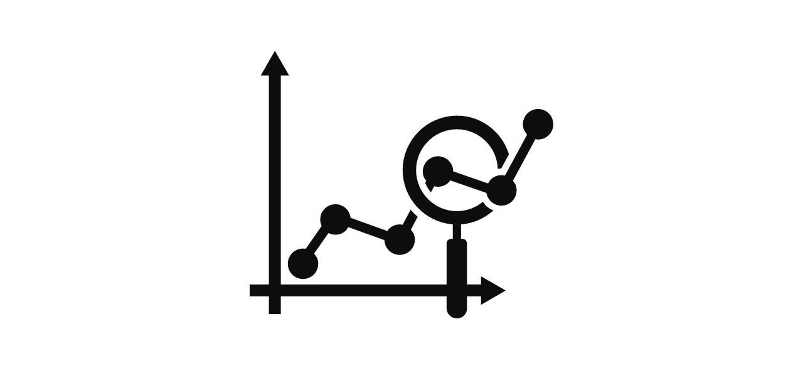
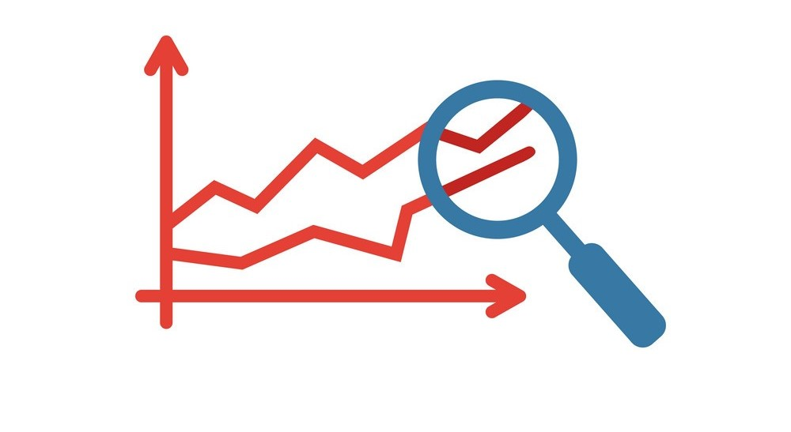
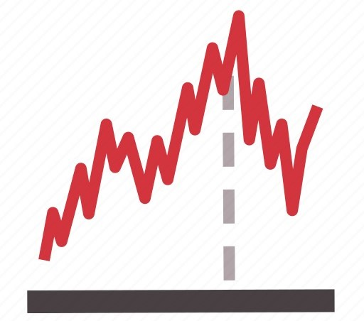
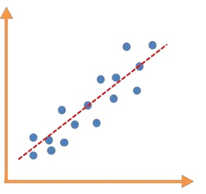

In this project I used logistic regression to predict the likeliness of a patient suffering from anxiety based on the presence of other patient characteristics. The data used was a medical dataset with 10,000 patients and their characteristics.

Data Exploration of COVID 19 dataset in SQL Server. Explored and compared cases, deaths, and vaccination rates between countries, creating new columns to aggregate data, using CTE, temp tables, and creating views for visualizations.

A linear regression model was built to predict the total charges a patient will accure during a hospital visit based on patient characteristics from the dataset.

Used Tableau to breakdown a bank's customers. Examining customer's location, account balance, age, gender, and job classification. Key customer features were highlighted in the visualization.
Built a model using Naïve Bayes to predict readmission rates among patients. The data was split into training and testing sets, where the training data was used to train the model and the testing data was used to evaluate the performance.
Used Market Basket Analysis to identify key combinations of medications prescribed together using patient prescription data. This technique uncovered patterns, associations, and relationships within the transactional dataset.

Forecasted the revenue for the next six months based on past sales data. Created an Auto-Regressive Integrated Moving Average (ARIMA) model to forecast the revenue.
Built a RNN using TensorFlow to predict a user’s opinion on a product based on data from previous reviews.

Cleaned and explored the dataset in Python to find what categories are correlated with total gross revenue.